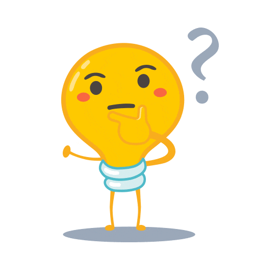
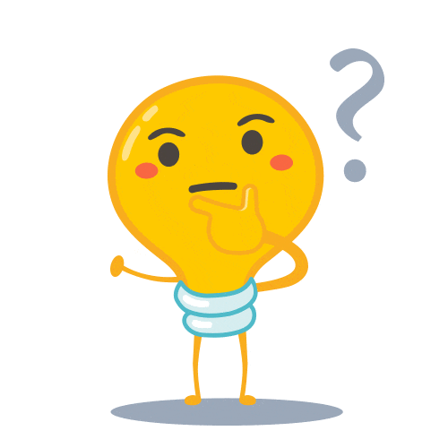

2.1. Conoce la secuencia didáctica del REA
La propuesta pedagógico-didáctica de estos Recursos Educativos Abiertos se basa en el aprendizaje experiencial, la instrucción directa y la reflexión cognitiva. Durante el desarrollo de las diferentes fases por las que el alumnado trabaja a lo largo del recurso, se le va a ir proponiendo al alumnado un planteamiento que parte con un reto o desafío inicial que conecta con sus propios intereses. Este reto inicial es un recurso para motivarlos con la temática del REA, les invita a activar sus conocimientos previos en relación a la temática planteada y, a partir de aquí, acompañarlos para que planifiquen sus propias hipótesis de resolución del reto, investiguen, aprendan y reflexionen sobre esas hipótesis planteadas, y generen sus propias producciones finales para resolverlo en diferentes situaciones generadas.
Para ello, proponemos que los REA sigan una secuencia didáctica común, basada en evidencias científicas y concretadas posteriormente en las diferentes áreas o materias elaboradas, a partir de un marco pedagógico inclusivo y variedad de estrategias de enseñanza para atender a diferentes contextos.
Todo ello con un diseño instruccional común que facilite la progresión del aprendizaje a través de las diferentes etapas educativas.
Elaboración propia. Secuencia didáctica de un REA en formato editable


 
.jpg){kind=link}